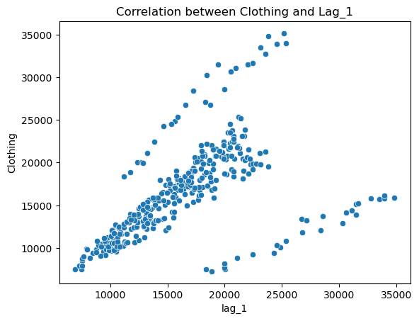

Chương 3 ARIMA
3.0.1 Lag
Lag của Time Series thể hiện việc lùi về một mốc trước đó. Ví dụ lag(1) nghĩa là lùi về trước đó 1 đơn vị \(X_{T-1}\). Lag(n) nghĩa là lùi về trước đó n đơn vị \(X_{T-n}\)
Ví dụ về số lượng quần áo bán ra của US từ năm 1992 đến năm 2019
Month Clothing
0 1992-01-01 6938
1 1992-02-01 7524
2 1992-03-01 8475
3 1992-04-01 9401
4 1992-05-01 9558
... ... ...
331 2019-08-01 23829
332 2019-09-01 19567
333 2019-10-01 21400
334 2019-11-01 25170
335 2019-12-01 35157Trong pandas, để tìm lag, ta dùng phương thức shift. Ví dụ
df['lag_1'] = df['Clothing'].shift(1)
df['lag_3'] = df['Clothing'].shift(3)
df['lag_12'] = df['Clothing'].shift(12)
df Month Clothing lag_1 lag_3 lag_12
0 1992-01-01 6938 NaN NaN NaN
1 1992-02-01 7524 6938.0 NaN NaN
2 1992-03-01 8475 7524.0 NaN NaN
3 1992-04-01 9401 8475.0 6938.0 NaN
4 1992-05-01 9558 9401.0 7524.0 NaN
.. ... ... ... ... ...
331 2019-08-01 23829 21742.0 23079.0 23121.0
332 2019-09-01 19567 23829.0 21116.0 19782.0
333 2019-10-01 21400 19567.0 21742.0 21203.0
334 2019-11-01 25170 21400.0 23829.0 25364.0
335 2019-12-01 35157 25170.0 19567.0 33950.03.0.2 Autocorrelation (Tự tương quan)
Correlation
Correlation là tương quan giữa 2 biến khác nhau, giá trị correlation nằm trong khoảng từ -1 đến 1, nếu giá trị càng tiến -1 nghĩa là 2 biến có sự tương quan nghịch, giá trị càng tiến đến +1 nghĩa là 2 biến có sự tương quan thuận
Autocorrelation
Autocorrelation là tương quan giữa một chuỗi timeseries và chuỗi đó với giá trị trước đó của chính nó.
Ví dụ tương quan giữa Clothing và lag_1
Clothing lag_1
Clothing 1.000000 0.518296
lag_1 0.518296 1.000000Tương quan giữa 2 biến này là 0.5

Để tính correlation giữa Timeseries và các lag của nó, ta sử dụng hàm acf trong statsmodel
array([1. , 0.50679045, 0.42793583, 0.48943282, 0.54920848,
0.51760066, 0.47709491, 0.50840091, 0.5311846 , 0.46104267,
0.38738473, 0.45582436, 0.9264336 , 0.45220705, 0.37936738,
0.43736208, 0.49102051, 0.46205604, 0.42158496, 0.4519868 ,
0.47432784, 0.403097 , 0.33531148, 0.40104508, 0.85039363,
0.39243258])Ở đây correlation giữa Clothing và lag_1 là 0.507, hơi khác so với dùng pandas, trong khuôn khổ phần này ta tập trung vào thư viện statsmodels hơn
Để visualize các giá trị correlation này ta dùng hàm plot_acf, ví dụ vẽ autocorrelation với lag tối đa là 30
import matplotlib.pyplot as plt
from statsmodels.graphics.tsaplots import plot_acf
fig, ax = plt.subplots(figsize=(10, 5))
plot_acf(df['Clothing'], lags=30, ax=ax)
_ =plt.xticks(list(range(31)))
plt.show()
Trong hình vẽ ta có thể thấy, correlation tại lag=12 và lag=24 có giá trị rất cao, do đó có thể suy đoán được timeseries này có tính tuần hoàn sau 12 tháng
3.0.2.1 Ứng dụng của Autocorrelation
- Xử lý Tín Hiệu và Thời Gian:
- Phân tích chuỗi thời gian: Được sử dụng để phát hiện chu kỳ, mô hình chuỗi thời gian, và dự đoán giá trị trong tương lai.
- Xử lý âm thanh: Trong xử lý tín hiệu âm thanh, tự động tương quan có thể được sử dụng để phát hiện các tần số quan trọng và các sự kiện lặp lại trong dữ liệu âm thanh.
- Khoa học Dữ Liệu:
- Phân tích dữ liệu: Trong khoa học dữ liệu và thống kê, tự động tương quan giúp phát hiện mối tương quan giữa các biến và mô tả sự phụ thuộc thời gian của dữ liệu.
- Phát hiện xu hướng và chu kỳ: Tự động tương quan có thể giúp xác định xu hướng và chu kỳ trong dữ liệu, giúp các nhà nghiên cứu và chuyên gia dự đoán và phân tích xu hướng thị trường, tình hình thời tiết, và nhiều ứng dụng khác.
- Kỹ thuật và Kỹ thuật số:
- Xử lý ảnh: Trong xử lý ảnh, tự động tương quan có thể được sử dụng để phát hiện biến đổi không gian và mô hình hình dạng.
- Kỹ thuật số và mạng truyền thông: Trong mạng truyền thông số và kỹ thuật số, tự động tương quan giúp phân tích tín hiệu, phát hiện tín hiệu trong nhiễu và cải thiện chất lượng truyền thông.
- Tài chính và Kinh tế:
- Phân tích thị trường: Trong tài chính, tự động tương quan giúp phân tích và dự đoán xu hướng thị trường, giúp các nhà giao dịch và nhà đầu tư hiểu rõ hơn về sự biến động và rủi ro trong thị trường tài chính.
- Khoa học và Tâm lý học:
- Nghiên cứu tâm lý: Trong nghiên cứu tâm lý, tự động tương quan có thể được sử dụng để phân tích sự phụ thuộc thời gian của các biến tâm lý và hành vi, giúp hiểu rõ hơn về sự ảnh hưởng và tương tác giữa các yếu tố khác nhau trong tâm lý học. Như vậy, tự động tương quan là một công cụ quan trọng và linh hoạt, được sử dụng rộng rãi trong nhiều lĩnh vực để phân tích, mô hình, và hiểu rõ hơn về sự phụ thuộc và tương tác trong dữ liệu và các hệ thống phức tạp.
3.0.3 Partial Autocorrelation
Partial Autocorrelation cũng tương tự như Autocorrelation. Tuy nhiên, nó mở rộng hơn bằng cách loại bỏ ảnh hưởng của các mốc thời gian trước đó.
Ví dụ tương quan Partial Autocorrelation với lag = 3 sẽ bỏ qua các giá trị trễ tại lag = 1 và lag = 2
3.1 Autoregressive Model
Mô hình tự hồi quy là mô hình ước lượng giá trị tương lai của timeseries dựa vào các giá trị trong quá khứ cửa chính timeseries đó.
Công thức tự hồi quy được biểu diễn như sau
\[ y_t = c + \phi_1 y_{t-1} + \phi_2 y_{t-2} + \phi_3 y_{t-3} + .... + \phi_p y_{t-p} + \epsilon_t \]
Hoặc có thể viết lại
\[ y_t = c + \sum^{p}_{1}\phi_{i} y_{t-i} + \epsilon_t \]
Trong đó: \(\epsilon_t\) là nhiễu trắng. Có thể nói mô hình này là mô hình hồi quy đa biến với các biến là các giá trị lag tại thời điểm từ \(1\) đến \(p\). Chúng ta kí hiệu mô hình này là \(AR(p)\)
Và khi đó giá trị dự đoán sẽ là:
\[
\hat{y}_{t+1} = c + \sum^{p}_{1}\phi_{i} y_{t-i+1}
\]
Để sử dụng AR model, ta dùng class AutoReg của thư viện statsmodels, chúng ta dùng root_mean_squared_error để đánh giá mô hình. Mô hình sẽ được huấn luyện và dự đoán cho 7 ngày tiếp theo
from statsmodels.tsa.ar_model import AutoReg
import pandas as pd
import numpy as np
# Đọc dữ liệu
df = pd.read_csv('../data/daily-total-female-births.csv')
df.head()
# Chia dữ liệu thành train test
Y = df.Births.values
train, test = Y[:len(Y)-7], Y[len(Y)-7:]
# Huấn luyện mô hình với p=2
AR_model = AutoReg(train, lags=2)
AR_results = AR_model.fit()
# Dự đoán kết quả mô hình
Y_hat = AR_results.forecast(7)
for y_hat, y_true in zip(Y_hat, test):
print(f'Predicted={y_hat} \tExpected={y_true}')Predicted=41.009982996211406 Expected=44
Predicted=41.3395707860348 Expected=34
Predicted=41.741049087971845 Expected=37
Predicted=41.8524930508191 Expected=52
Predicted=41.91850636281712 Expected=48
Predicted=41.94330911921793 Expected=55
Predicted=41.95535989900887 Expected=50Để xem các params của mô hình ta gọi model_fit.params. Trong đó giá trị đầu tiên là hằng số \(c\), các giá trị tiếp theo tương ứng là các \(\phi\) tại các lag
array([29.46548462, 0.18468755, 0.11315929])Để đánh giá kết quả mô hình, chúng ta dùng thư viện sklearn.metrics
from sklearn.metrics import mean_squared_error
print('RMSE:', np.sqrt(mean_squared_error(test, Y_hat)))8.110283777968577Dưới đây là biểu đồ thể hiện giá trị Dự đoán và giá trị thực tế trong 7 ngày

Chúng ta có thể mô phỏng lại cách tính các giá trị dự đoán dựa trên các params của model với \(c=29.46548462, \phi_t=0.18468755, \phi_{t-1}=0.11315929\)
Y_hat_sim = list(train[-2:])
c = 29.46548462
phi_1 = 0.18468755
phi_2 = 0.11315929
for i in range(7):
predict = c + phi_1*Y_hat_sim[-1] + phi_2*Y_hat_sim[-2]
Y_hat_sim.append(predict)
for a, b in zip(Y_hat_sim[2:], Y_hat):
print(f"Simulated={a} \t Predicted={b}")Simulated=41.00998312 Predicted=41.009982996211406
Simulated=41.33957094797416 Predicted=41.3395707860348
Simulated=41.74104926920371 Predicted=41.741049087971845
Simulated=41.85249324133591 Predicted=41.8524930508191
Simulated=41.918506557292 Predicted=41.91850636281712
Simulated=41.94330931564456 Predicted=41.94330911921793
Simulated=41.95536009628208 Predicted=41.955359899008873.1.1 Mô phỏng cách tính AutoRegressive Model bằng Sklearn
df['Births_shift_1'] = df['Births'].shift(1)
df['Births_shift_2'] = df['Births'].shift(2)
train = df.iloc[:len(df)-7]
train.dropna(inplace=True)
from sklearn.linear_model import LinearRegression
model = LinearRegression()
model.fit(train[['Births_shift_1','Births_shift_2']], train['Births'])
print(model.intercept_ , model.coef_)29.46548461980426 [0.18468755 0.11315929]Ta có thể thấy các parameters sau khi dùng sklearn tương tự với các params của thư viện statsmodels
## Moving Average Model
Thay vì sử dụng các giá trị trong quá khứ làm đầu vào để dự đoán, Moving Average Model sử dụng các lỗi dự báo của quá khứ để dự đoán giá trị tiếp theo.
Lưu ý cần phân biệt Moving Average Smoothing và Moving Average Model.
Moving Average Smoothing
Ý tưởng chính là sử dụng một cửa sổ trượt trên chuỗi dữ liệu và tính trung bình của các giá trị trong cửa sổ đó. Kết quả là chuỗi dữ liệu mới, nơi mà các dao động ngắn hạn hoặc nhiễu được giảm thiểu, giúp nhận diện xu hướng và mô hình hóa chuỗi dữ liệu dễ dàng hơn.
Ví dụ, khi bạn thấy một chuỗi dữ liệu có nhiều dao động ngắn hạn và bạn muốn làm trơn nó để nhận diện xu hướng chung, bạn có thể sử dụng moving average smoothing để tạo ra một phiên bản làm trơn của chuỗi dữ liệu.
Công thức MA model như sau
\[ y_t = c + \theta_1 \epsilon_{t-1} + \theta_2 \epsilon_{t-2} + \theta_3 \epsilon_{t-3} + .... + \theta_q \epsilon_{t-q} + \epsilon_t \] Hoặc có thể viết lại
\[ y_t = c + \sum^{q}_{i=1}\theta_{i}\epsilon_{t-i} + \epsilon_t \]
Trong đó \(c\) là trung bình series, \(\epsilon_{t-i}\) là white noise tại \(t-i\). Trong thực tế, chúng ta không có quan sát cho các giá trị white noise này, do đó nó không thực sự là hồi quy theo nghĩa hiểu thông thường.
Và khi đó giá trị dự đoán sẽ là
\[ \hat{y}_{t+1} = c + \sum^{q}_{i=1}\theta_{i}\epsilon_{t-i+1} \]
Trong thư viện statsmodels không hỗ trợ chính thức cách tính Moving Average Model, nhưng chúng ta có thể áp dụng thông qua ARIMA.
Ví dụ về cách sử dụng ARMA
# Huấn luyện mô hình với q=2
MA_model = ARIMA(train, order=(0, 0, 2))
MA_results = MA_model.fit()
# Dự đoán kết quả mô hình
Y_hat = MA_results.predict(start=len(train), end=len(train)+len(test)-1, dynamic=False)
for y_hat, y_true in zip(Y_hat, test):
print(f'Predicted={y_hat} \tExpected={y_true}')Predicted=41.11548396873163 Expected=44
Predicted=41.5656013608698 Expected=34
Predicted=41.89874024020355 Expected=37
Predicted=41.89874024020355 Expected=52
Predicted=41.89874024020355 Expected=48
Predicted=41.89874024020355 Expected=55
Predicted=41.89874024020355 Expected=50xem các tham số \(\theta\)
array([0.17900771, 0.11330768])xem tham số \(c\)
41.89874024020355Đánh giá kết quả mô hình
print('RMSE:', np.sqrt(mean_squared_error(test, Y_hat)))RMSE: 8.15992514853609để xem các espilon
array([-6.89874024e+00, -8.58294190e+00, -9.63603195e+00, -8.20730676e+00,
...
-4.87763328e+00, -2.26772814e+00, -2.94012608e+00])Dưới đây là biểu đồ thể hiện giá trị Dự đoán và giá trị thực tế trong 7 ngày
Nếu để ý kỹ, chúng ta sẽ thấy kể từ giá trị dự đoán thứ 3, giá trị dự đoán bằng đầu là một giá trị không đổi 41.89874024020355. Lý do là mô hình không biết trước các sai số dự đoán của các giá trị tiếp theo để từ bước tính toán thứ 3. Để mô phỏng lại cách tính toán. Ta có \(c = 41.89874024 ,\theta_{t} = 0.17900771, \theta_{t-1} = 0.11330768\) và \(resid_t = -2.94012608, resid_{t-1}=-2.26772814\)
c = 41.89874024
theta_t = 0.17900771
theta_t_prev_1 = 0.11330768
resid_t = -2.94012608
resid_t_prev_1 = -2.2677281lúc này, giá trị dự báo cho T+1 sẽ là:
41.11548399342612lúc này, giá trị dự báo cho T+2 sẽ là:
41.565601374967706Và giá trị từ T+3 trở đi sẽ là
resid_t_prev_1 = resid_t # = 0
# lúc này resid_t từ T+2 đã bằng 0
# nên giá trị resid_t_previous_1 cũng bằng 0,
# do đó kết quả trở về giá trị trung bình c
resid_t = 0
c + theta_t * resid_t + theta_t_prev_1 * resid_t_prev_141.89874024Đây cũng chính là điểm yếu của mô hình Moving Average
3.2 AutoRegressive Moving Average Model
Như cái tên của nó, mô hình này kết hợp 2 Mô hình Autoregressive và Moving Average
Nhăc lại công thức AR
\[ y_t = c + \sum^{p}_{1}\phi y_{t-i} + \epsilon_t \]
Và công thức MA
\[ y_t = c + \sum^{q}_{i=1}\theta_{i}\epsilon_{t-i} + \epsilon_t \]
Do đó công thức ARMA là kết hợp cả hai công thức.
\[ y_t = c + \epsilon_t + \sum^{p}_{1}\phi y_{t-i} + \sum^{q}_{i=1}\theta_{i}\epsilon_{t-i} \]
Tương tự, trong thư viện statsmodels không hỗ trợ chính thức cách tính Moving Average Model, nhưng chúng ta có thể áp dụng thông qua ARIMA. Ở phần sau chúng ta sẽ tìm hiểu về ARIMA rồi quay ngược lại ví dụ về MA